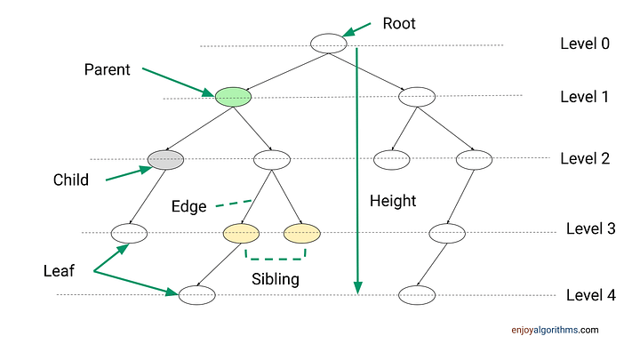
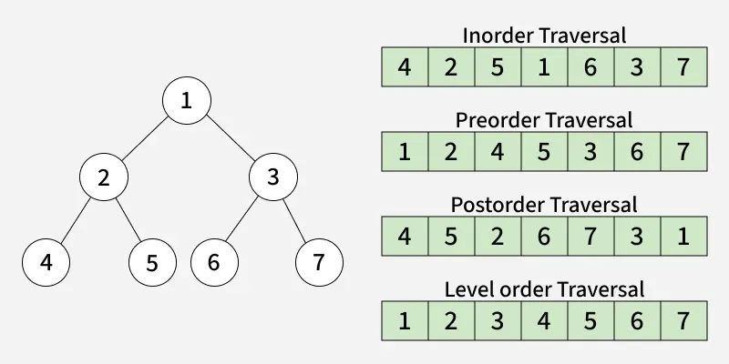

Binary Trees
10.12.2025 - Binary trees are a fundamental data structure in computer science, widely used for various applications such as searching, sorting, and hierarchical data representation. A binary tree is a tree data structure in which each node has at most two children, referred to as the left child and the right child. A node without children is called a leaf node. How many parents/ancestors a node has, declares its depth or level in the tree. The topmost node is called the root node. The depth of the root node is 0, its level is 0 aswell. The heightof a node is defined as the number of edges on the longest path from the node to a leaf node. The height of a tree is the height of its root node. Edges are the connections between nodes. A subtree is a portion of a tree that consists of a node and all its descendants. 
Types of Binary Trees
A binary tree has allways a maximum of two children per node, but there are different types of binary trees based on their structure and properties:
- Binary Search Tree (BST): A binary tree where the left subtree of a node contains only nodes with values less than the node's value, and the right subtree contains only nodes with values greater than the node's value. This property makes BSTs efficient for searching, insertion, and deletion operations. It's kind of like binary search.
- AVL Tree: A self-balancing binary search tree where the difference in heights between the left and right subtrees of any node (the balance factor) is at most 1. This ensures that the tree remains approximately balanced, leading to O(log n) time complexity for search, insertion, and deletion operations.
- There are list of more types of binary trees, but they would blow up the scope of this document.
Traversal order
Traversal order is what defines the order in which nodes are visited in a binary tree. There are different ways to traverse, but the most common ones is from left to right. you visit the left subtree, then the root node, and finally the right subtree. This is called in-order traversal and it results in visiting the nodes in ascending order for binary search trees. It is important to say that traversal order is only an implicit property of binary trees, not a structural one. 
Implementation of Binary Trees
Trav. order operations
Iterating implemented recursiv:
def iter(node):
if node == null:
return
iter(node.left)
output(node)
iter(node.right)
Getting the first node of a subtree:
def subtree_first(node):
if node.has_left:
return node
return subtree_first(node.left)
Getting the successor (the one after the node in trav. order):
def successor(node):
if node.right != null:
while(True):
if node = node.parent.left: # walk up until you go right
return parent
node = node.parent
return subtree_first(node.right)
Getting the predecessors (the one before the node in trav. order):
def predecessor(node):
if node.left != null:
while(True):
if node = node.parent.right: # walk up until you go left
return parent
node = node.parent
return subtree_last(node.left)
BST standard-operations
def get(id, node=root):
if node == null:
return null
if node.id == id:
return node
if node.id < id:
return get(id,node.right)
return get(id,node.left)
def add(id, node=root):
if node.id = id
return False
if node.id < id:
if node.right == null:
node.right=new Node(id, node)
return True
return add(id, node.right)
if node.left == null:
node.left=new Node(id, node)
return True
return add(id, node.left)
def remove(id, node=get(id)):
if node == null:
return False
if node.is_leaf:
node.remove # goes to the parent and removes the pointer to the node
return True
if node.left != null:
swap(node, predecessor(node))
return remove(id, node)
def contains(id):
if get(id) == null:
return False
return True
def toString(node=root):
if node == null:
return ""
return toString(node.left) + node.toString() + toString(node.right)